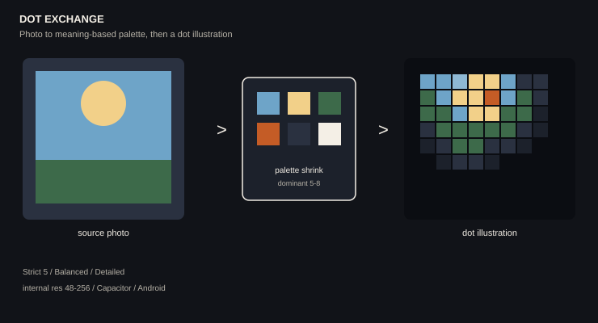

Dot Exchange
사진을 의미 기반 팔레트로 줄인 뒤, 도트 일러스트로 다시 그리는 엔진. Capacitor로 Android까지 나간다.

Strict 5, Balanced, Detailed 프리셋. 내부 해상도는 48에서 256까지.
사진을 의미 기반 팔레트로 줄인 뒤, 도트 일러스트로 다시 그리는 엔진. Capacitor로 Android까지 나간다.

Strict 5, Balanced, Detailed 프리셋. 내부 해상도는 48에서 256까지.